Paper: TO DO
Authors: *
Abstract: Audio-visual speech enhancement (AV-SE) aims to enhance degraded speech along with extra visual information such as lip videos, and has been shown to be more effective than audio-only speech enhancement. This paper proposes further incorporating ultrasound tongue images to improve lip-based AV-SE systems' performance. Knowledge distillation is employed during the training stage to address the challenge of acquiring ultrasound tongue images during inference, enabling an audio-lip speech enhancement student model to learn from a pre-trained audio-lip-tongue speech enhancement teacher model. Experimental results demonstrate significant improvements in the quality and intelligibility of the speech enhanced by the proposed method compared to the traditional audio-lip speech enhancement baselines. We also apply automatic speech recognition to the denoised speech for evaluating the phoneme error rate (PER), and the proposed method can reduce the PER of several tongue-related phonemes.
Note: Noisy denotes the input noisy speech; Groundtruth denote the clean speech; Proposed denotes our proposed method; VSE denotes the method described in [10]; PVSE denotes the method described in [22] with a real lip steam; and IOAVSE denotes the method described in [23]. All the baselines' code can be found on GitHub.
| Groundtruth | Noisy | Proposed | VSE | PVSE | IOAVSE |
| 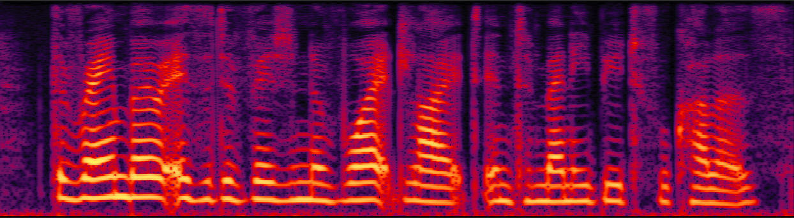 | 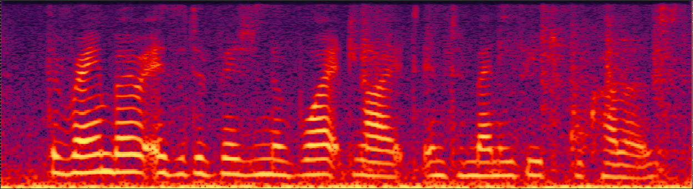 | 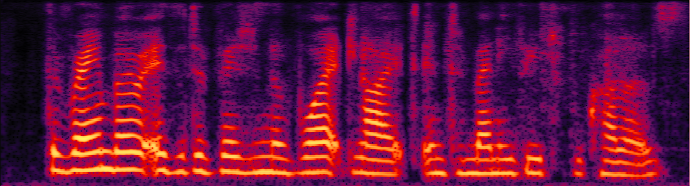 | 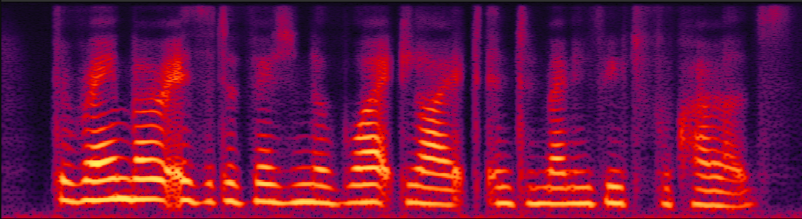 | 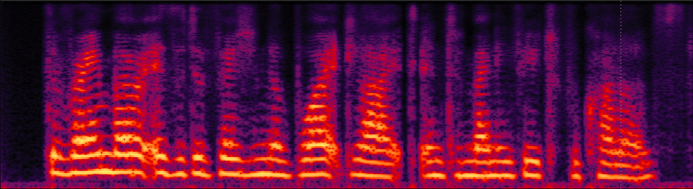 | 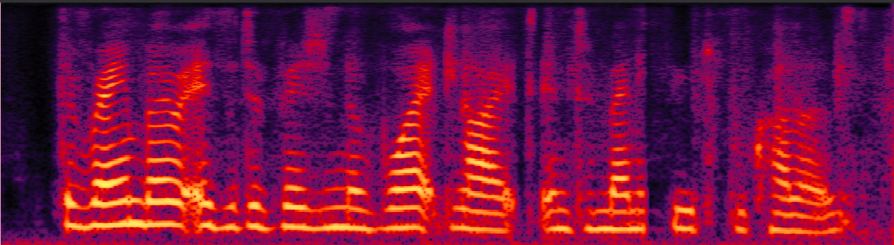 |
| 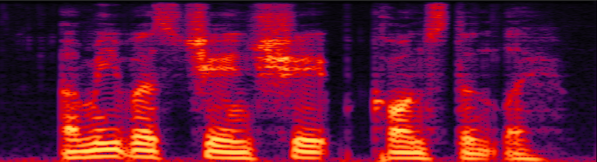 | 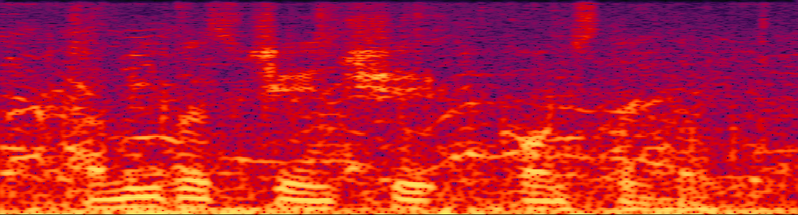 | 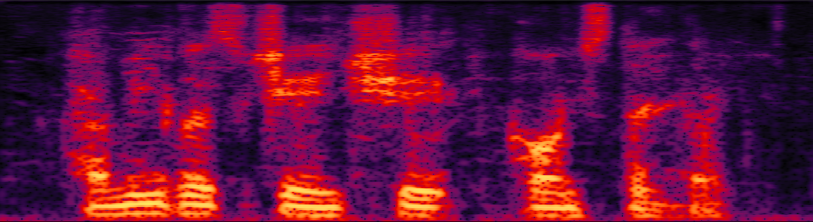 | 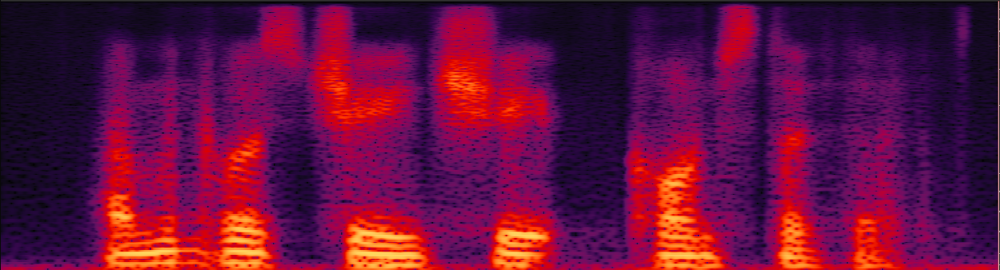 |
|
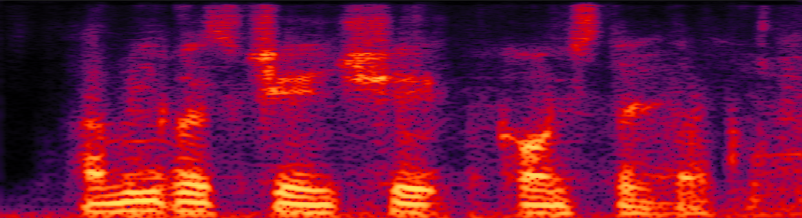 |
| 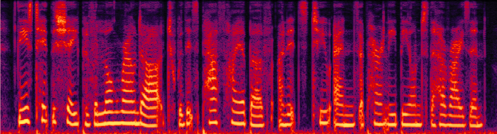 | 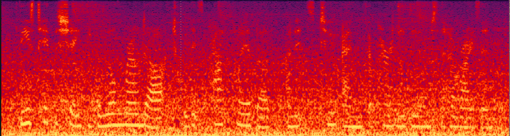 | 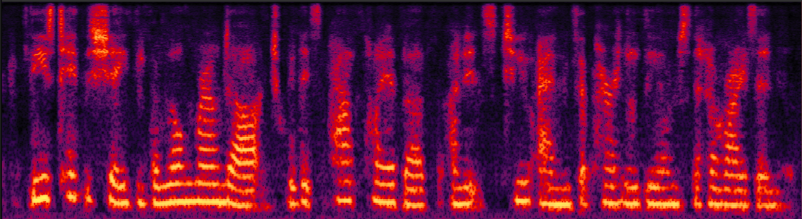 | 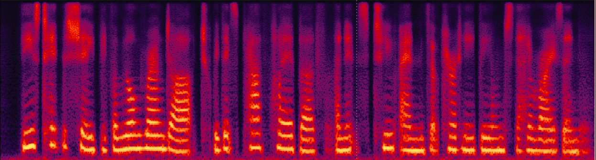 | 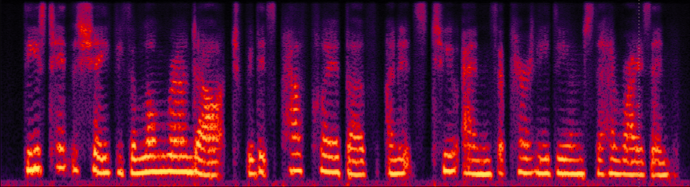 |
|
| 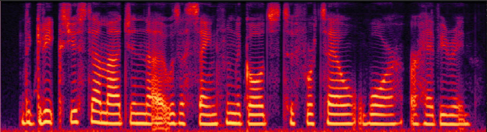 | 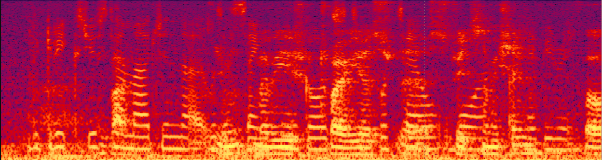 | 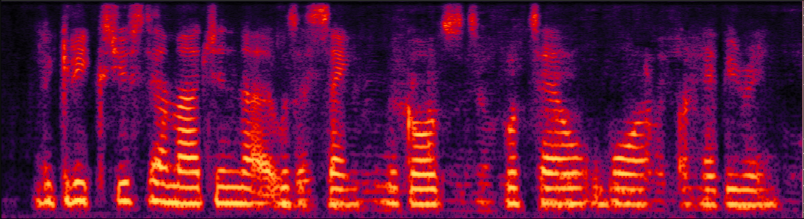 | 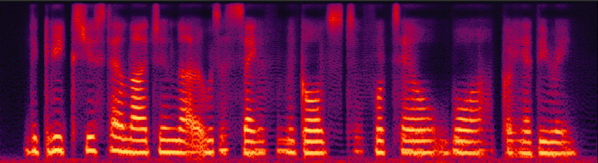 | 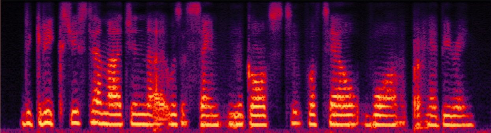 | 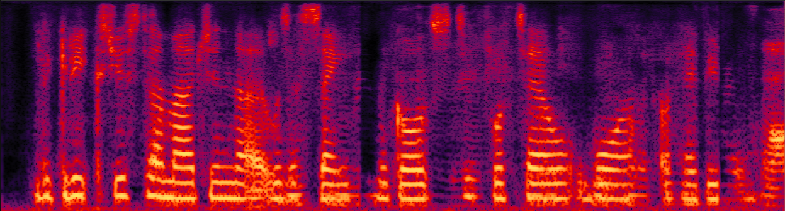 |
Note: Proposed denotes our proposed method; w/o SPKD denotes the proposed method without the SPKD loss; Audio-Lip denotes the proposed method without Knowledge distillation; Audio-Lip-Tongue denotes the proposed teacher model.
| Audio-Only | Proposed | w/o SPKD | Audio-Lip | Audio-Lip-Tongue |
| 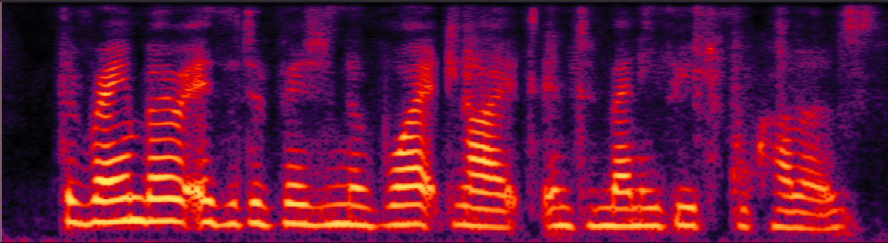 | 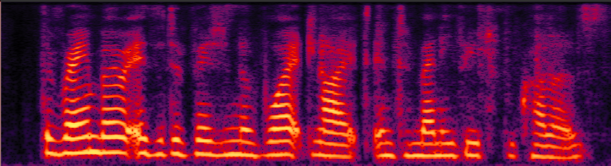 | 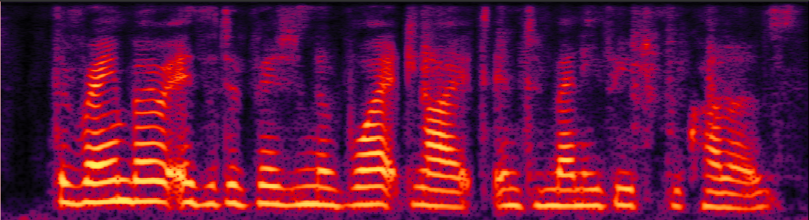 | 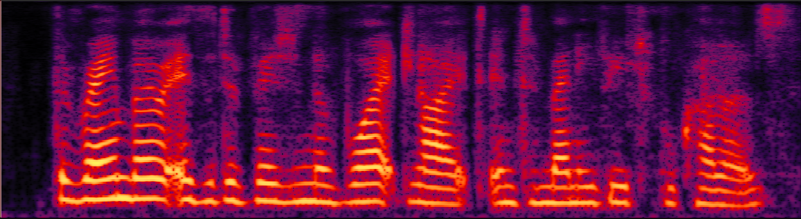 | |
| 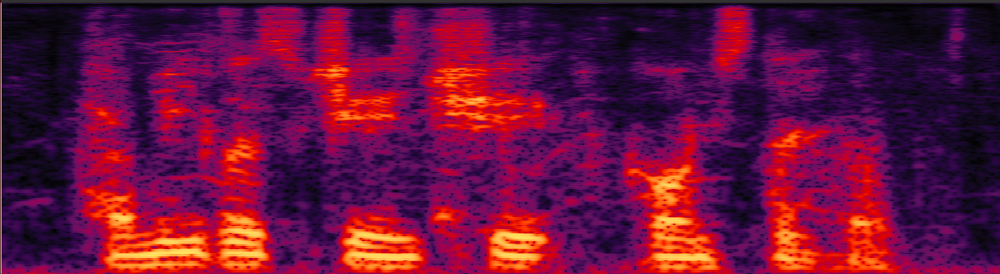 | 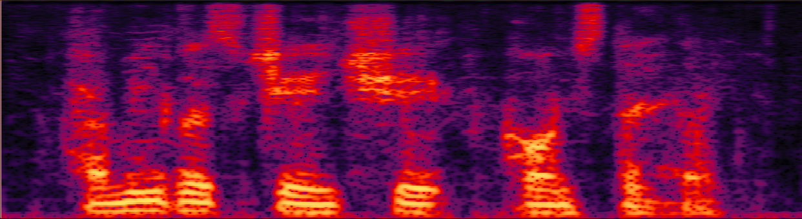 | 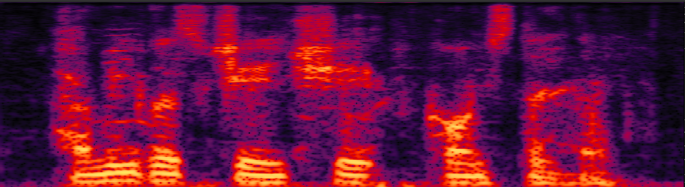 | 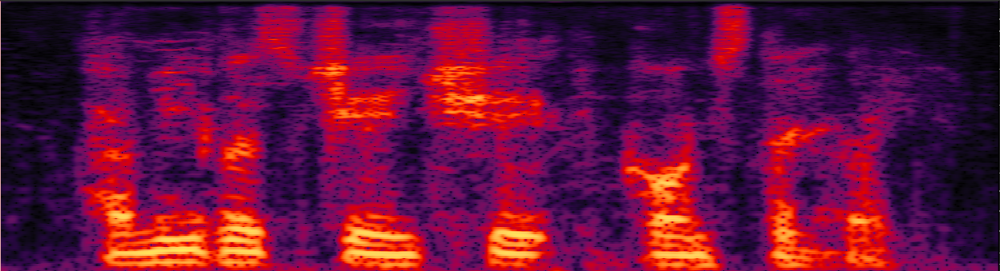 | |
| 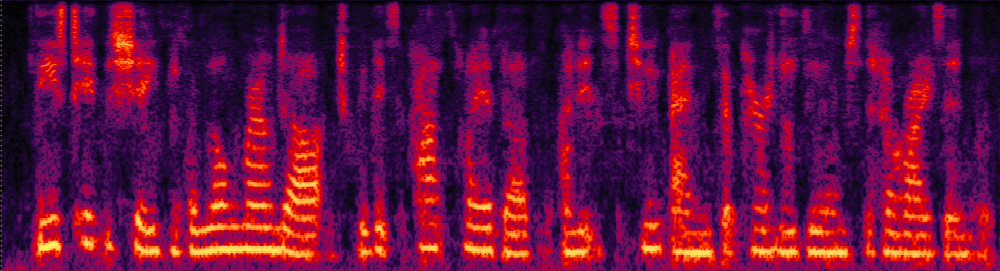 | 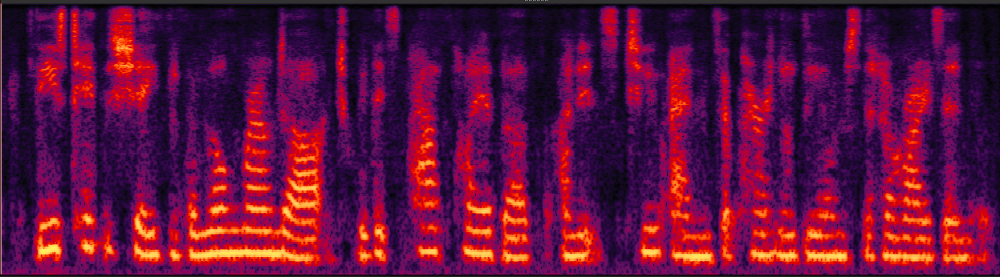 | 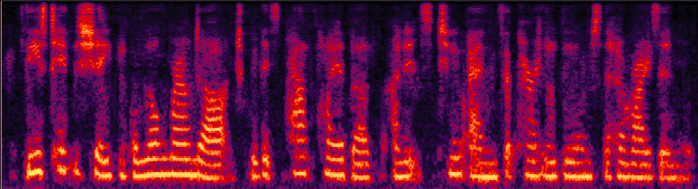 | 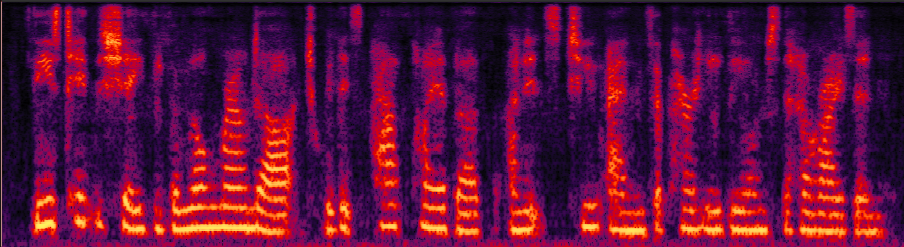 | |
| 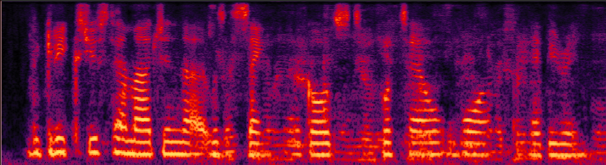 | 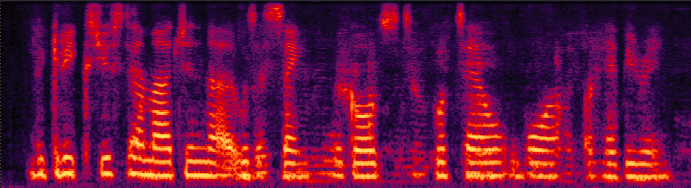 | 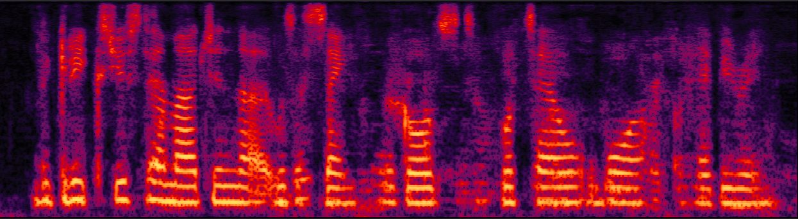 | 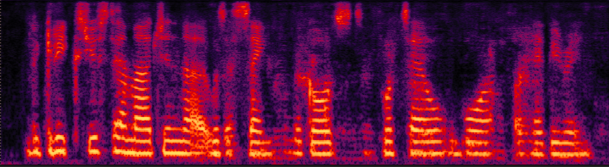 | |